Simultaneous Processing
If we visualize processing a list like a conveyor belt of values moving from right to left, there are 3 main scenarios.
#Process Only 1

Notice only one of the lists is processed, while the other sort of holds still
(recursive-fn (rest lst1) lst2)
#Lockstep both at the same time

Both lists being processed at the same time
(recursive-fn (rest lst1) (rest lst2))
#Both at different rates

Lists are processed at different rates depending on some condition
(if something?
(recursive-fn lst1 (rest lst2))
(recursive-fn (rest lst1) lst2))
#Deducing the cases
Tables
Do the table method over both inputs to see what cases you have to cover and think about, and then simplify from there. This results in an NxN cond that is a good first pass, but can be further simplified.
| (empty? lst1) |
(cons? lst1) |
|---|
| (empty? lst2) |
both lists are empty |
lst1 has items, lst2 is empty |
|---|
| (cons? lst2) |
lst2 has items, lst1 is empty |
both lists have items |
|---|
You can use Truben.no to fill in the table cases.
Simultaneous Recursion Template
It helps writing out all the 4 cases in both the tests and templates to elaborate what the function should do
; sim-recur-temp : (ListOfX ListOfX -> ???)
(define (sim-recur-temp lst1 lst2)
(cond
[(and (empty? lst1) (empty? lst2))
...]
[(and (cons? lst1) (empty? lst2))
(... (first lst1) (rest lst1))]
[(and (empty? lst1) (cons? lst2))
(... (first lst2) (rest lst2))]
[(and (cons? lst1) (cons? lst2))
(... (first lst1) (first lst2) (rest lst1) (rest lst2))]))
Lists and Numbers
Reminder that Natural Numbers can be viewed as a recursive type just like a List. You will encounter problems where you’ll consume a Number and a List and process them both. Typically the base case for the Number is zero, with recursive calls being sub1 or (- n 1)
; A Natural is one of:
; - 0
; (add1 Natural)
; natural-temp : (Natural -> ???)
(define (natural-temp n)
(cond
[(= 0 n) ...]
[else
(natural-temp (- n 1))]))
| (empty? lst1) |
(cons? lst1) |
|---|
| (= num 0) |
lists are empty and num is zero |
lst1 has items, num is zero |
|---|
| (> num 0) |
num is non-zero, lst1 is empty |
num is non-zero, and lst1 is non-empty |
|---|
The list and natural numbers(as a recursive type) looks like this:
; num-list-temp : (ListOfAny Number -> ???)
(define (num-list-temp lst num)
(cond
[(and (empty? lst) (= num 0))
...]
[(and (cons? lst) (= num 0))
(... (first lst) (num-list-temp (rest lst) num))]
[(and (empty? lst) (> num 0))
(... num (num-list-temp (rest lst) (- num 1)))]
[(and (cons? lst) (> num 0))
(... (first lst) num
(num-list-temp (rest lst) (- num 1)))]))